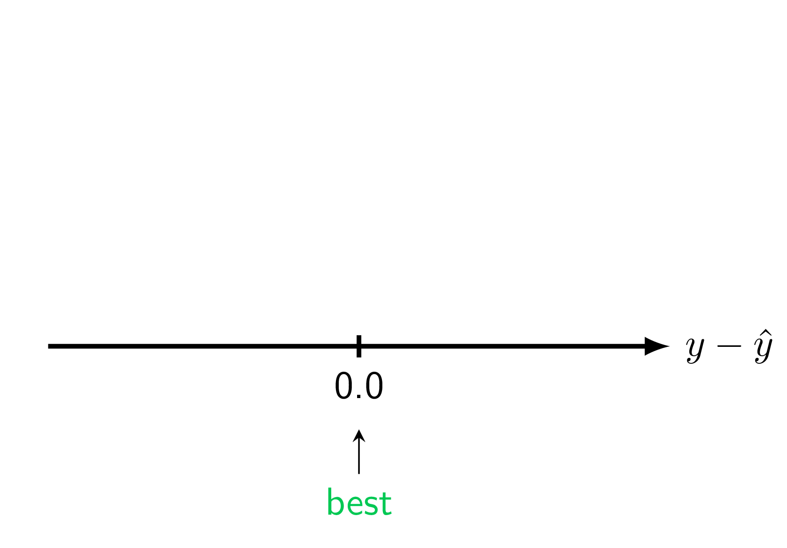
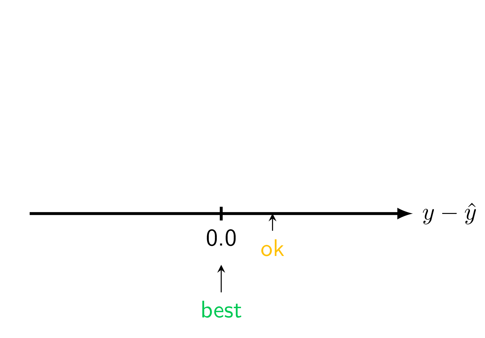
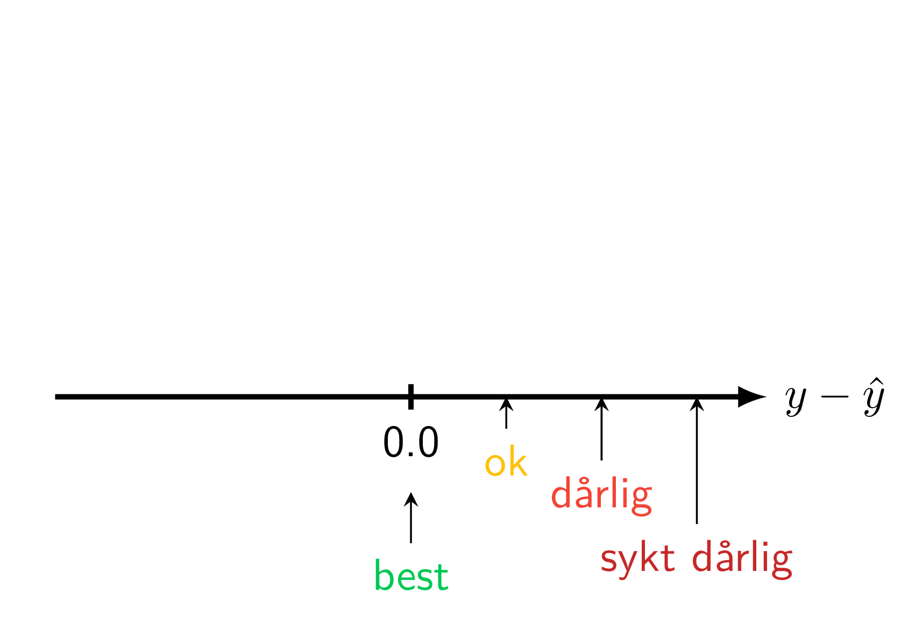
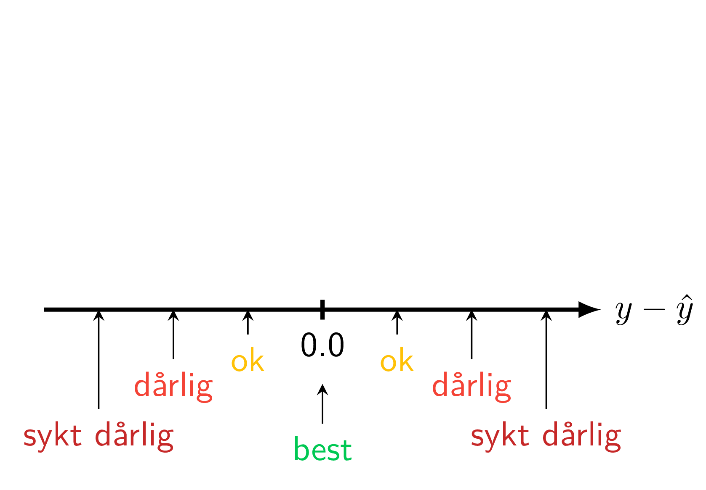
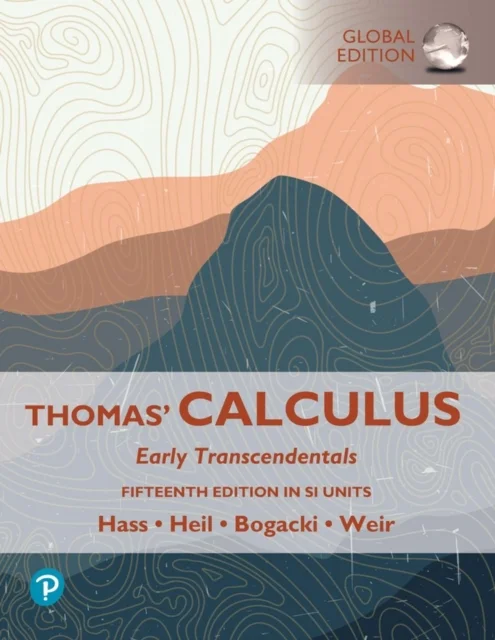
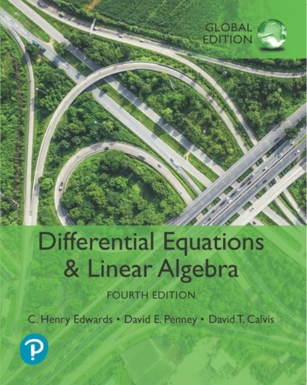

\[ \small L = (y - \hat{y})^2 \]
\[ \small L = \frac{1}{N} \sum_i^N (y_i - \hat{y}_i)^2 \]
\[ \frac{\mathrm{d}}{\mathrm{d}x} \]

\[ \frac{\partial}{\partial x} , \quad \frac{\partial}{\partial y} \]


\[ \small \frac{\partial L}{\partial\boldsymbol{\color{teal}{\theta}}_{K-1}} = \frac{\partial L}{\partial\color{Purple}{f}_{K}} \frac{\partial \color{Purple}{f}_K}{\partial\boldsymbol{\color{teal}{\theta}}_{K-1}} \]
\[ \small \frac{\partial L}{\partial\boldsymbol{\color{teal}{\theta}}_{K-2}} = \frac{\partial L}{\partial \color{Purple}{f}_{K}} \frac{\partial \color{Purple}{f}_K}{\partial\color{Purple}{f}_{K-1}} \frac{\partial \color{Purple}{f}_{K-1}}{\partial\boldsymbol{\color{teal}{\theta}}_{K-2}} \]
\[ \small \frac{\partial L}{\partial\boldsymbol{\color{teal}{\theta}}_{K-3}} = \frac{\partial L}{\partial\color{Purple}{f}_{K}} \frac{\partial \color{Purple}{f}_K}{\partial\color{Purple}{f}_{K-1}} \frac{\partial \color{Purple}{f}_{K-1}}{\partial\color{Purple}{f}_{K-2}} \frac{\partial \color{Purple}{f}_{K-2}}{\partial\boldsymbol{\color{teal}{\theta}}_{K-3}} \]
\[ \small \frac{\partial L}{\partial\boldsymbol{\color{teal}{\theta}}_{i}} = \frac{\partial L}{\partial\color{Purple}{f}_{K}} \frac{\partial \color{Purple}{f}_{K}}{\partial\color{Purple}{f}_{K-1}} \frac{\partial \color{Purple}{f}_{K-1}}{\partial\color{Purple}{f}_{K-2}} \dots \frac{\partial \color{Purple}{f}_{i+2}}{\partial\color{Purple}{f}_{i+1}} \frac{\partial \color{Purple}{f}_{i+1}}{\partial\boldsymbol{\color{teal}{\theta}}_{i}} \]

2D

\[ \small \boldsymbol{A} = \begin{bmatrix} a_1 \\ a_2 \end{bmatrix}, \boldsymbol{B} = \begin{bmatrix} b_1 \\ b_2 \end{bmatrix} \]
\[ \small ||\boldsymbol{A}-\boldsymbol{B}|| = \sqrt{(a_1-b_1)^2 + (a_2-b_2)^2} \]
3D

\[ \small \boldsymbol{A} = \begin{bmatrix} a_1 \\ a_2 \\ a_3 \end{bmatrix}, \boldsymbol{B} = \begin{bmatrix} b_1 \\ b_2 \\ b_3 \end{bmatrix} \]
\[ \small ||\boldsymbol{A}-\boldsymbol{B}|| = \sqrt{(a_1-b_1)^2 + (a_2-b_2)^2 + (a_3-b_3)^2} \]
ND
\[ \small \boldsymbol{A} = \begin{bmatrix} a_1 \\ a_2 \\ \vdots \\ a_N \end{bmatrix}, \boldsymbol{B} = \begin{bmatrix} b_1 \\ b_2 \\ \vdots \\ b_N \end{bmatrix} \]
\[ \small ||\boldsymbol{A}-\boldsymbol{B}|| = \sqrt{(a_1-b_1)^2 + (a_2-b_2)^2 + \dots + (a_N-b_N)^2} \]




💕